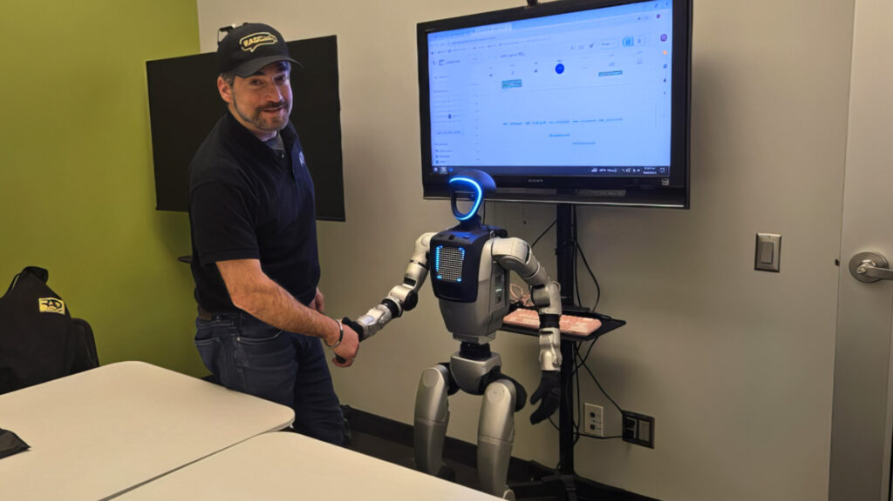

Quand un robot joue au ping-pong avec la précision d’un pro : le nouveau défi du MIT
Publié le 14 mai 2025
S.Reinharz(RAD CEO) et HERO. Source : radsecurity.com
Les ingénieurs du Massachusetts Institute of Technology (MIT) viennent de franchir une nouvelle étape dans la robotique dynamique en développant un robot joueur de ping-pong capable de renvoyer des balles à très haute vitesse avec une précision remarquable. Bien plus qu’un gadget ludique, ce projet révèle des avancées prometteuses dans le domaine de l’anticipation et de la réactivité robotique.
Un bras robotique ultra-rapide
Fixé à une extrémité d’une table de ping-pong, ce robot se compose d’un bras robotique multiarticulé équipé d’une raquette standard. Plusieurs caméras à haute vitesse captent les mouvements de la balle, tandis qu’un système de contrôle prédictif en temps réel calcule sa vitesse et sa trajectoire. Le bras peut alors exécuter trois types de coups différents : le topspin, le coup droit et le backspin, avec une orientation précise et une variété d’effets.
Des capacités impréssionnantes avec une marge de progression
Pour tester ses performances, les chercheurs ont lancé 150 balles consécutivement. Résultat : le robot a affiché un taux de réussite global de 88 % pour l’ensemble des coups, avec une vitesse moyenne d’impact de 11 mètres par seconde et des pointes enregistrées jusqu’à 19 m/s (soit 68 km/h), proche des meilleurs joueurs humains. “En termes de vitesse de frappe, on s’en approche vraiment beaucoup”, affirme David Nguyen, doctorant au MIT et co-auteur de l’étude.
Cependant, l’appareil reste fixe et ne couvre qu’un secteur restreint autour du centre de la table. À terme, les ingénieurs envisagent de le monter sur un rail ou une plateforme mobile pour élargir son rayon d’action.
Un outil d'entraînement, mais pas seulement
Ce type de robot pourrait devenir un excellent partenaire d'entraînement pour les joueurs, en reproduisant fidèlement la diversité des effets et des trajectoires d’un adversaire humain. “Un lanceur automatique ne vous indique ni l’effet ni l’intention du coup adverse. Ce robot, lui, le peut.”, explique Kendrick Cancio, autre co-auteur du projet.
Mais le potentiel dépasse largement le cadre du tennis de table. En effet, les compétences développées ici — détection rapide, anticipation dynamique, exécution précise — sont transposables à de nombreux domaines.
Une innovation en vitesse d’analyse et d’exécution
Pour les chercheurs du MIT, ce projet n’a jamais été uniquement centré sur le sport. Il s’agit avant tout de repousser les limites de la réactivité robotique. Le ping-pong, par son exigence à la fois de rapidité et de précision, constitue un excellent terrain d’expérimentation.
“Les problèmes que nous résolvons, en particulier ceux liés à l’interception rapide et précise d’objets, peuvent être très utiles dans des scénarios où un robot doit réagir en temps réel”, explique encore David Nguyen.
Applications concrètes :
- Robotique de secours : un robot capable d’anticiper des chutes d’objets ou de réagir à des mouvements brusques dans un environnement instable.
- Industrie logistique : bras robotisés ultra-réactifs capables de manipuler des objets fragiles ou mobiles.
- Médecine robotique : bras chirurgicaux capables d’ajuster leur mouvement à la microseconde près.
Des projets similaires, comme ceux de Google DeepMind ou d’Omron, explorent déjà l’apprentissage automatique pour améliorer les performances en ping-pong. Mais le MIT mise ici sur une architecture généralisable, testée également sur le projet MIT Humanoid, un robot bipède destiné à évoluer dans des environnements complexes.
“Avec notre robot, nous explorons comment ces techniques peuvent s’intégrer à des systèmes humanoïdes capables d’accomplir de nombreuses tâches utiles”, conclut Cancio.
Le ping pong n'est qu'une démonstration technologique de ce que l’on peut attendre des futurs robots intelligents. La fusion entre perception ultra-rapide, anticipation en temps réel et exécution motrice dynamique pourrait révolutionner des secteurs allant de l’assistance aux personnes jusqu’à la robotique militaire.
Mais cela n’empêche pas que nous sommes impatients de le voir affronter nos champions pongiste… ou sauver des vies dans des zones sinistrées.